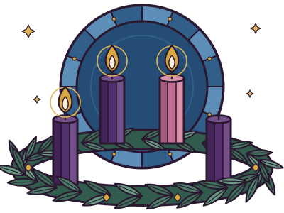

Guia do Advento
15
A
Bom dia, Ana
Domingo da Alegria · 3ª semana do Advento

A vela da alegria foi acesa
JM
LB
CA
RS
M
Sua coroa em grupo
4 de 5 já rezaram hoje
Seu caminho
Retrospectiva da semana
Qui
Sex
Sáb
Hoje
15
Seg
16
Ter
17
Qua
18
Abrir a porta de hoje
Santo Afonso de Ligório · 7 min
Início
Caminho
Grupo
Você